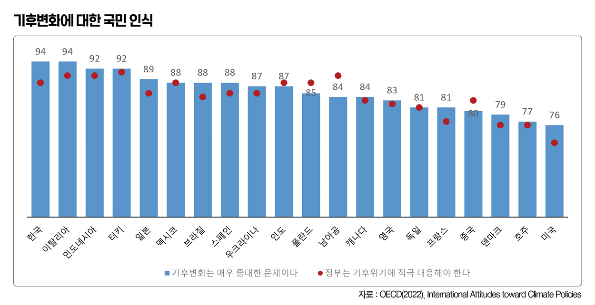
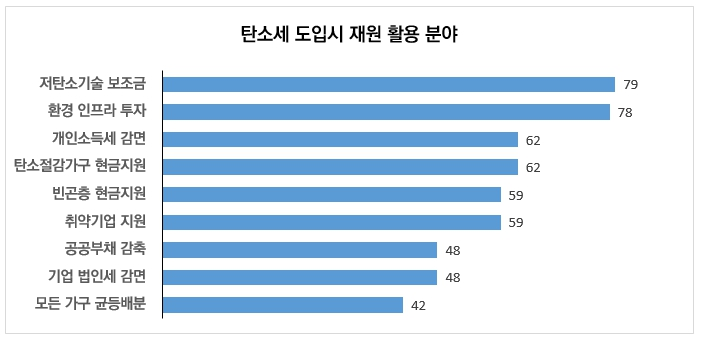

박영삼의 통계로 보는 노동
탄소배출 세계 7위 한국, 기후변화를 어떻게 인식할까?
OECD 20개국 중 한국인 기후변화 중요성 인식 94% 1위
유엔 기후변화협약(UNFCCC)의 협상 근거가 되는 IPCC의 보고서는 기후변화의 주된 원인을 “인간에 의한 온실가스 배출”이라고 명시하고 있다. 지구 평균기온이 산업화 이전보다 1.5도 이상 오르지 않도록 하려면 2030년까지 전 세계 이산화탄소 배출량을 2010년 대비 45% 감축할 것을 권고한다. 그래야만 2050년 이전까지 온실가스 순배출량을 제로(0)로 낮출 수 있고, 인류 생존과 지구 생태계의 지속을 보장받을 수 있다는 것이다.
우리나라는 2021년 12월 ’국가 온실가스 감축목표(NDC)’를 2030년까지 2018년 대비 40% 감축하겠다는 상향된 수정계획을 제출한 바 있다. 이때 보고한 2018년 기준 온실가스 총배출량은 7억2천760만톤이다. 약속을 지키려면 2030년 전까지 배출량을 4억3천660만톤(2018년 배출량의 60%) 이하로 줄여야 한다.
환경부가 지난 7월 발표한 우리나라 ’2022년 국가 온실가스 잠정배출량’은 6억5천450만톤이다. 2021년의 잠정배출량 6억7천810만톤에 비해 3.5% 감소했다. 배출량 정점을 기록했던 2018년과 비교하면 9.8% 줄었다. 하지만 잠정치일 뿐이고 2021년에 이어 올해 말 제출해야 하는 격년 갱신보고서에서 공식 배출량과 상세한 배출목록, 이행계획의 진척 상황을 보고해야 한다.

한국 이산화탄소 배출량 세계 7위
지구 온난화에 대한 우리나라의 책임은 국제비교 통계를 통해 알 수 있다. 가장 최근의 국제비교 통계로는 국제에너지기구(IEA)에서 작성한 ‘세계 이산화탄소 배출 2022’ 보고서가 있다. 이 보고서에서 공개하는 이산화탄소(CO2) 배출량은 에너지와 산업생산, 제품사용에서 발생하는 이산화탄소 배출량이 중심이 되며 메탄과 이산화질소 등이 빠져 있고 농업과 폐기물 등 에너지 외 부분은 포함하지 않아서 우리 정부가 발표한 총배출량 통계와는 차이가 있다. 하지만 IEA와 EDGAR의 통계는 기후변화당사국 총회에서 중요하게 활용하는 자료로 공신력이 인정받고 있다.
이 통계에서 한국의 2021년 이산화탄소 배출량은 6억2천680만톤이다. 208개국 중 7번째로 많은 배출량을 기록했다. 비교 대상을 경제협력개발기구(OECD) 회원국에 중국, 인도, 러시아, 브라질을 포함할 경우 최대 배출국은 중국이 124억6천630만톤으로 단연 압도적인 1위를 차지한다. 다음으로 미국과 인도, 러시아, 일본이다. 그 뒤를 잇는 한국은 전 세계 배출량의 1.65%를 차지하며, 독일(6억6천590만톤) 다음이다. 한국이 지구온난화를 초래하는 대표적인 국가에 해당한다는 사실을 알 수 있다
더구나 한국은 1인당 배출량 기준에서는 12.1톤으로 중국과 일본, 독일보다 이산화탄소 배출량이 더 많다. 철강과 정유, 시멘트 등 대형플랜트의 배출 비중이 높기 때문이다. 국내총생산(GDP) 기준으로 보자면, 우리나라는 GDP 1천달러(미국달러화)당 배출량이 0.27톤으로 호주와 인도보다는 적지만, 미국이나 일본에 비해서는 더 많은 배출량을 보인다. 동일한 부가가치 생산을 위해 더 많은 이산화탄소를 배출하고 있는 셈이다.
국민 94% “기후변화 문제 중요하다”
그렇다면 우리나라 국민은 기후변화가 얼마나 심각하고, 이에 대응하기 위해 어떤 정책이 필요하다고 생각하고 있을까. 지난해 7월 OECD는 20개 회원국 4만여명을 대상으로 기후변화에 대응하는 주요 정책 국민인식을 비교 조사를 했다. ☛ 자료 보기(Fighting climate change: International attitudes toward climate policies)
먼저 “기후변화가 매우 중대한 문제인가?”라는 질문에 대해 “그렇다”고 공감한 사람의 비율은 한국이 94%로 이탈리아와 공동 1위였다. 반면 미국은 76%의 응답률로 조사대상국에서는 꼴찌를 차지했다. 호주, 덴마크, 프랑스, 영국 등의 유럽 국가들도 중국과 함께 낮은 응답률을 보인 것이 이채롭다.
“정부가 기후변화에 맞서 적극 대응해야 한다”는데 동의한 응답은 한국이 88%로, 7위를 차지했다. 미국 국민은 71%만 동의해 가장 낮았다. 대체로 이산화탄소 배출량이 많은 국가에서 소극적인 응답이 많은 것으로 나타났는데 한국은 적어도 기후변화에 대한 심각성이나 정부의 적극적인 정책 필요성에는 높은 공감을 하는 것으로 보인다. OECD 보고서는 학력이 높을수록, 정치성향이 진보적일수록, 대중교통 이용률이 높을수록 긍정답변이 많았다고 분석했다.

“탄소세 재원은 저탄소기술 지원에 써야”
세부적인 기후위기 대응정책을 보자. 한국의 경우 ’내연기관 자동차생산 금지’에는 68%의 찬성률을 보였다. 다른 자동차생산 선진국(미국 50%, 일본 48%, 독일 42%)보다 높은 지지율이다. 탄소세 도입에 찬성 비율도 53%로 다른 선진국(미국 33%, 일본 35%, 독일 28%)보다 높았다.
{kind=link}
하지만 개인의 실천에서는 저조한 응답률을 보였다. 육류소비 억제(36%), 자동차 운행제한(36%), 난방 축소(29%) 등으로 다른 선진국과 비슷했다. 탄소세를 도입할 경우 재원의 사용 용도를 가구에 대한 균등배분(42%)이나 법인세 감면(48%)보다는 환경 인프라 투자(79%)와 저탄소기술에 대한 보조금(78%)이 더 높은 지지를 받았다.

고려대 노동문제연구소 노동데이터센터장 (youngsampk@gmail.com)